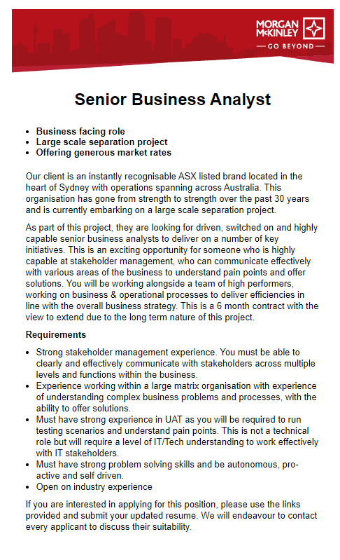
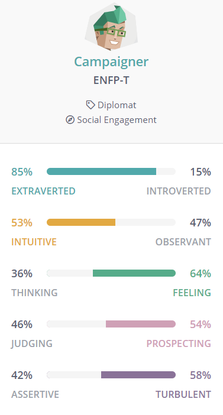
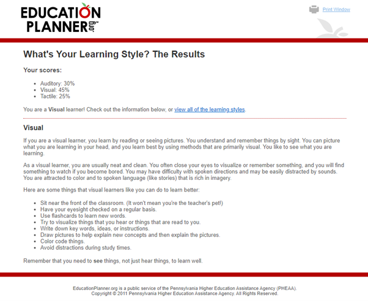
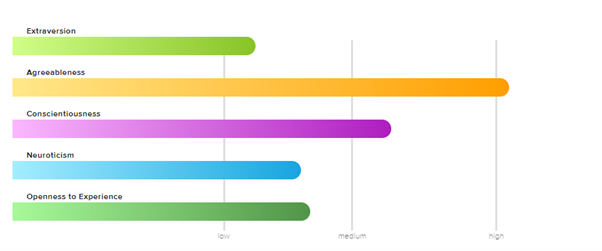

My IT Profile
Personal Information

Student ID: S3888776
email: S3888776@student.rmit.edu.au
My name is Wajih Kabalan, I was born and raised in Melbourne, my mother was born in Tonga and my father in Lebanon, both migrated to Australia in the 80’s, these two cultrures are surprisingly similar in that they both emphasise food and family. I am the second of 6 siblings and am currently undertaking a bachelor of commerce.
Interest in IT
I have always had a peripheral interest in IT through enjoying gaming and gadgets in general however only recently developed the curiosity to go further into understanding the back end. No catalytic event sparked my curiosity, more a cumulation of frustration in not understanding what I was reading.
I came to RMIT through OUA as they had these subjects available during the study period, although, being from Melbouren I had always heard great things about the university.
I am hoping to get a deeper understanding of how the applications I use are built in the back end and hope to gain skills that will transfer into my career in the future.
Ideal Job

Why Business Analyst?
I have always enjoyed customer facing and sales positions in the past and aspire towards consulting level project work in the future, I feel as if BA work is a nice mix of technical, bureaucratic and social work.
This position requires a consultant to oversee a company’s IT separation project. This to my understanding includes liaising with key stakeholders on both sides of the separation and ensuring that as little is damaged as possible in the severing. The skills and experience are more nuanced than any certifications and will likely require a person with change management experience and some experience in overseeing User assurance testing.
Currently most of my experience is in sales and client engagement (headhunting and resourcing), I am working towards a Bachelor of Commerce and hope to start working as a junior BA for a consulting business once I’ve finished in order to hone my skills and get a better understanding of what the role requires.
Personal Profile
Myers-Briggs

I have always been curious about this test and this was a good opportunity to take it, I identify fairly strongly with the strengths and weknesses that are suggested in the Campainer profile.
Learning Style

In the past i thought that I was overarchingy a visual learner, I was interested in how high Auditory and Tactile learning was, using this information I may add some more variance into how I study in the future
Big-5 Personality Attributes

I found that my extraversion rating in this test was almost the opposite of the myers briggs test, the other attributes were fairly well aligned, I may do this test on another day and see if it is mood dependent!
• What do the results of these tests mean for you? After reading through the information about the campaigner personality type I am compelled to agree with most of the points, I did find after doing the big 5 test that there were some conflicting assessments, I consider myself fairly extroverted and spend a decent amount of my time.
• How do you think these results may influence your behaviour in a team?
• How should you take this into account when forming a team?
Project Idea
Overview (100 words) - This should be a summary of what the project will be.
I spent a year and a half working as a sales rep for a family run tile import and install company, during my time there I was in constant interaction with other small family run tiling and construction businesses as they made up the bulk of our customer base. I noticed that there was a large gap in their own CRM capabilities, I had a base version of salesforce for recording conversations with customers while most of these small businesses relied heavily on excel spread sheets and in many cases pen and paper records because they could not justify the cost of a large CRM. I am proposing building an affordable application that will record interactions between these small businesses and their customers as well as guide them through setting up a custom and efficient sales process.
Motivation (100) words) - This should be a description of why the project will be interesting or useful. This may include statistics or other evidence, such as: "There service. are 1.5 billion cat owners in Australia, and so there is a huge market for an automated cat feeder. Using Raspberry Pi technology is a cheap and easily assembled solution to this problem."
Family businesses account for %70 of all businesses in australia, https://www.familybusiness.org.au/ I would like to enable these businesses to keep competitive and increase their sales without having to hire expensive reps and pay for expensive other stuff
Description (500 words) - Detailed description of the features of the product or service
Record
Message
Advertise
Advise on modern sales techniques
Tools and Technologies (100) words) - Describe the software, hardware and/or other equipment needed. Include any relevant open source tools as appropriate.
Skills Required (100 words) - List the skills are required for your project, including software that needs to be written, and special hardware (if any). How feasible will it be to find the skills, software and hardware required?
Outcome (100 words) - If the project is successful, what will be the outcome? How will the original problem be solved? What impact will this development have?